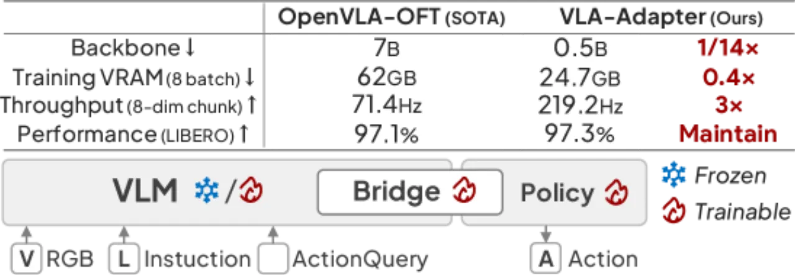
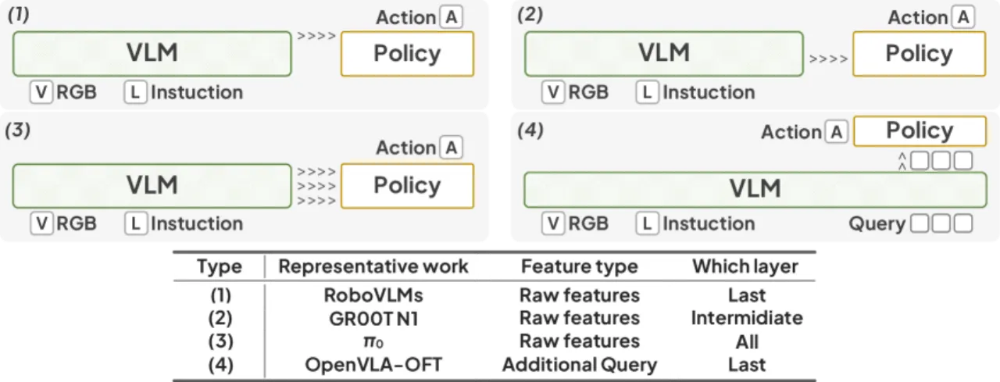
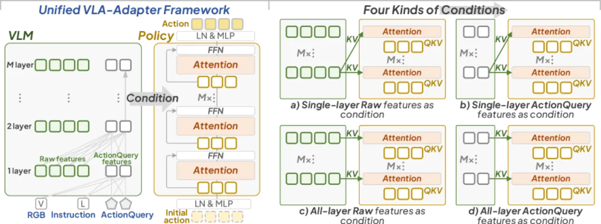
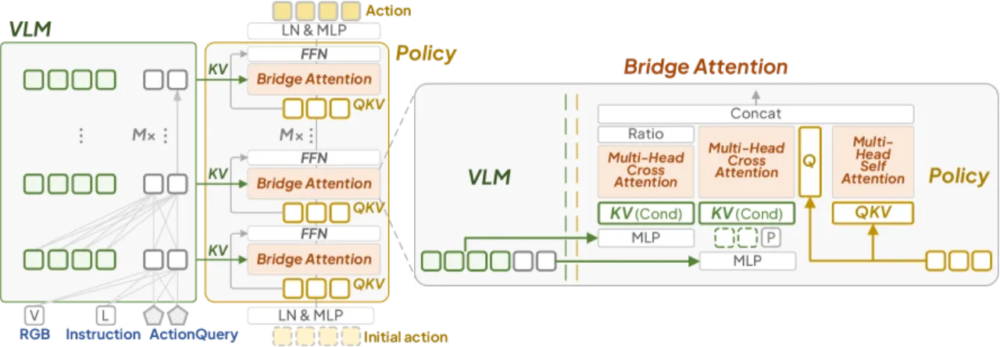
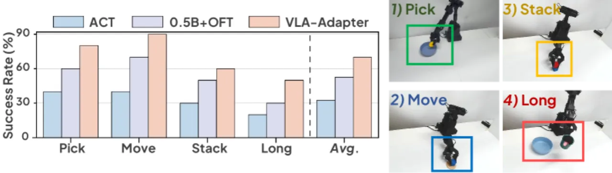

VLA-Adapter 提出一套轻量化 VLA 范式：通过系统性分析不同 bridging paradigm，设计出带有 Bridge Attention 的 Policy 模块，仅用 0.5B 参数骨干即可在 LIBERO、CALVIN 等主流基准上超越 7B 级别 VLA，同时推理吞吐量比 OpenVLA 快 52×，单卡 8 小时即可完成训练。
现有 VLA 模型普遍依赖数十亿参数的视觉语言骨干（如 7B LLM）与大规模机器人预训练数据，导致训练成本高、推理延迟大，难以在消费级硬件上部署。本文的核心问题是：能否仅用一个微小的 VLM 骨干（0.5B），通过设计更好的 bridging 方式，达到甚至超越大模型的操作性能？
"We propose VLA-Adapter to reduce VLA's reliance on large-scale Vision-Language Models and extensive pre-training … achieving state-of-the-art performance using only a 0.5B-parameter backbone without robotic data pre-training."

VLA-Adapter 的核心是将 VLM 产生的多模态表征以最优方式"桥接"到动作空间。论文首先系统梳理了四种 bridging paradigm（图2），随后提出包含条件探索与 Bridge Attention 设计的 Policy 模块（图3），并通过 97M 参数的轻量网络（图4）输出 H 步 action chunk。


论文对 VLM 内部特征进行系统分析，得出三个关键结论：
Bridge Attention 由两个 cross-attention 和一个 self-attention 构成。它分别处理 raw latent ℛ（多模态细节）与 ActionQuery latent AQ（聚合信息），通过 MLP 生成 key-value pair。一个可学习参数"Ratio g"以 tanh(g) ∈ [−1, 1] 控制 raw features 的注入程度，防止分布不稳定；AQ 则以固定权重 1.0 注入，从而在灵活性与稳定性间取得最优平衡。

实验在 LIBERO（Spatial / Object / Goal / Long 四个子集）和 CALVIN ABC→D 两大基准上与多个 SOTA VLA 对比，同时评估效率指标（吞吐量、延迟）和冻结骨干场景下的泛化能力。骨干使用 Qwen2.5-0.5B，无机器人数据预训练。
| 方法 | 参数量 | Spatial | Object | Goal | Long | Avg. |
|---|---|---|---|---|---|---|
| π0 | 3B | 96.8% | 98.8% | 95.8% | 85.2% | 94.2% |
| SmolVLA | 2.2B | 93.0% | 94.0% | 91.0% | 77.0% | 88.8% |
| OpenVLA-OFT | 7B | 97.6% | 98.4% | 97.9% | 94.5% | 97.1% |
| VLA-Adapter（ours） | 0.5B | 97.8% | 99.2% | 97.2% | 95.0% | 97.3% |
| VLA-Adapter-Pro（ours） | 0.5B | 99.6% | 99.6% | 98.2% | 96.4% | 98.5% |
| 方法 | 参数量 | Task 1 | Task 2 | Task 3 | Task 4 | Task 5 | Avg. Len |
|---|---|---|---|---|---|---|---|
| OpenVLA-OFT | 7B | 96.3% | 89.1% | 82.4% | 75.8% | 66.5% | 4.10 |
| VLA-Adapter（ours） | 0.5B | 99.1% | 94.6% | 88.8% | 82.8% | 76.5% | 4.42 |
| VLA-Adapter-Pro（ours） | 0.5B | 98.5% | 95.0% | 90.5% | 85.3% | 80.0% | 4.50 |
| 方法 | 吞吐量 (Hz) | 延迟 (sec) |
|---|---|---|
| OpenVLA | 4.2 | 0.2396 |
| VLA-Adapter（ours） | 219.2 | 0.0365 |
VLA-Adapter 的吞吐量比 OpenVLA 提升 52×，延迟降低 6.5×，满足实时控制需求。

消融实验（表7，LIBERO-Long）验证了各条件组合的贡献：
| 条件组合 | 成功率 |
|---|---|
| 仅 last-layer raw | 85.8% |
| 仅 ActionQuery | 90.2% |
| 仅 intermediate raw | 88.4% |
| 仅 all-layer raw | 90.6% |
| all-layer raw + ActionQuery（ours） | 95.0% |
注入度消融（表8）显示：raw features 采用可学习 tanh(g)、AQ 固定为 1.0 的组合最优（95.0%），优于两者均可学习（92.6%）或均固定（91.4%）的方案。ActionQuery token 数量实验（图8）表明 64 个 token 为最优平衡点，更多 token 带来冗余干扰。
骨干缩放实验（表2）进一步表明，VLA-Adapter 框架对骨干规模并不敏感：从 0.5B 到 7B，LIBERO-Long 成功率仅从 95.0% 提升至 95.4%，验证了框架本身的有效性而非单纯依赖骨干能力。
"Because VLA-Adapter is not pre-trained on a large amount of embodied data and the scale is tiny, its generalization in real-world systems needs to be improved."——受限于骨干规模极小（0.5B）且未在大规模具身数据上预训练，模型在新场景、新任务上的零样本或少样本泛化能力仍有差距。
"The quality of the actions generated depends on conditions provided by the VLM and how they are used."——Bridge Attention 的效果上限受 VLM 提供的 raw features 和 ActionQuery 特征质量约束，VLM 骨干的表达能力直接影响 Policy 能否获得足够有效的条件信号。
"The fundamental training process is still relatively simple, and processes such as reinforcement learning can be explored."——当前仅使用模仿学习（行为克隆）范式训练，未引入 RL fine-tuning 或 RLHF 等更复杂的训练策略，存在进一步提升空间。